Хорошее намерение порождает неожиданную силу.
Тема:Игра аккордовых цепочек на основ T,S,D в ля-миноре
Задачи урока
- Написать две гаммы a-moll (ля-минор) и ее параллельную тональность C-dur (До-мажор);
- Определить основные ступени (ноты) T-Тоника, S-Субдоминанта, D-Доминанта;
- Определить трезвучия Т, S, D;
- Определить фактуру аккорда на основе T-Тоника, S-Субдоминанта, D-Доминанта;
- Прописать ноты, входящие состав аккорда;
- Прописать аккордовую цепочку в каждой тональности S-T-S-D-T;
- Проиграть различными переборами и боями;
- Из двух тональностей составить одну аккордовую цепочку;
- На основе аккордовой цепочки сочинить одноголосную мелодию целыми нотами;
- Сделать ритмическое изменение мелодии;
- Подобрать 2-3 песни на данные аккорды;
Задание 1. Написать две гаммы a-moll (ля-минор) и ее параллельную тональность C-dur (До-мажор);
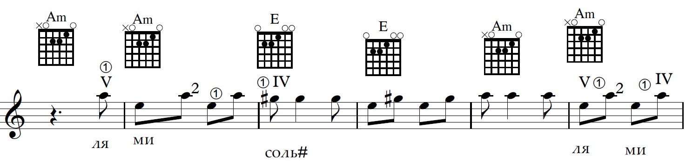
Задание 2.Определить основные ступени (ноты) T-Тоника, S-Субдоминанта, D-Доминанта;
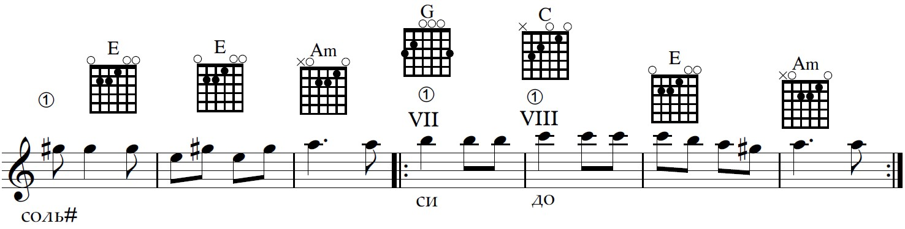 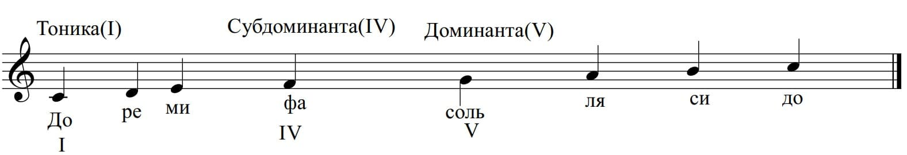Задание 3.Определить трезвучия Т, S, D;
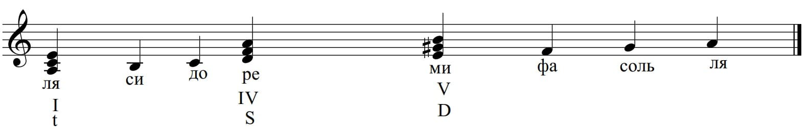 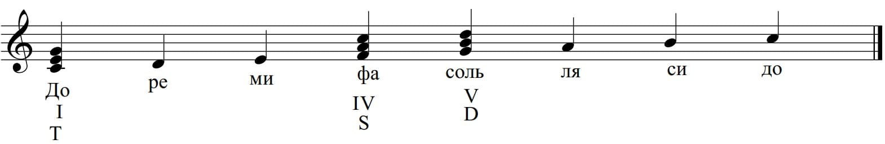Задание 4.Определить фактуру аккорда на основе T-Тоника, S-Субдоминанта, D-Доминанта;
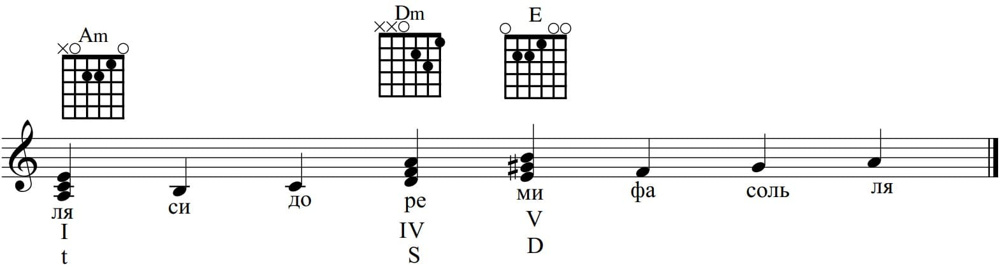 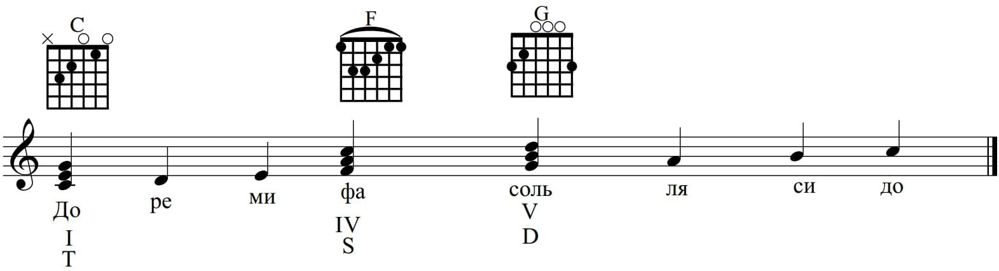Задание 5.Прописать ноты, входящие состав аккорда;
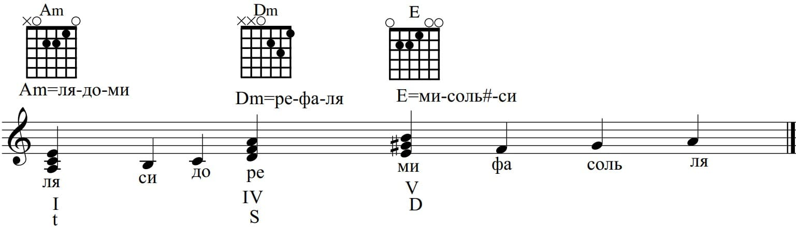 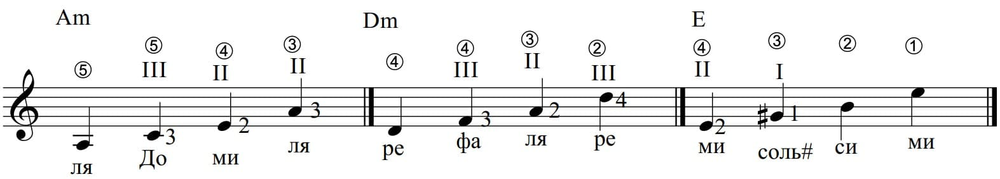 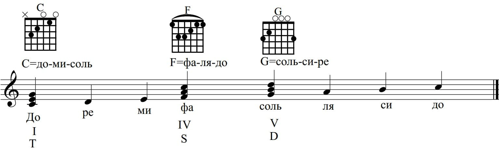 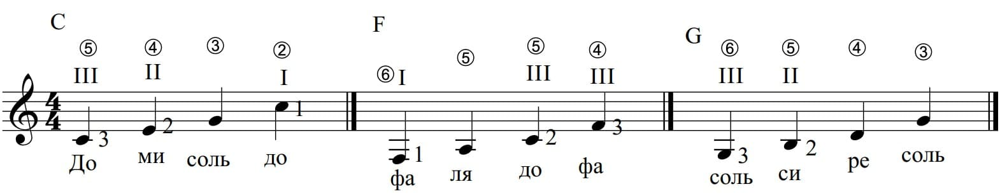Задание 6.Прописать аккордовую цепочку в каждой тональности S-T-S-D-T;
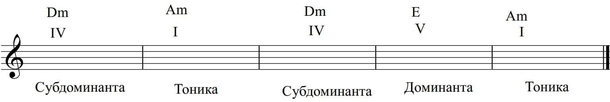 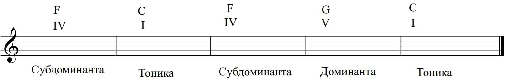Задание 7.Проиграть различными переборами и боями;
 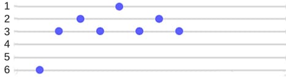
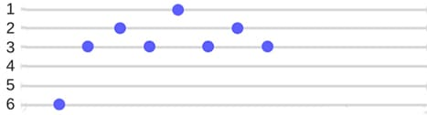

Задание 8.Из двух тональностей составить одну аккордовую цепочку;

Задание 9.На основе аккордовой цепочки сочинить одноголосную мелодию целыми нотами;
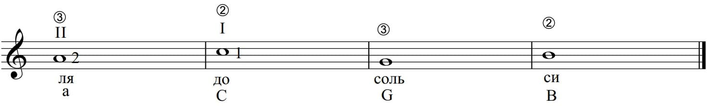Задание 10.Сделать ритмическое изменение мелодии;
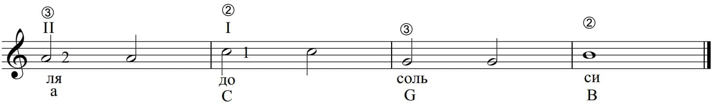 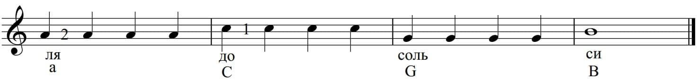 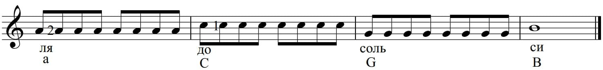 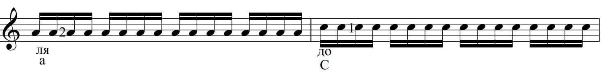 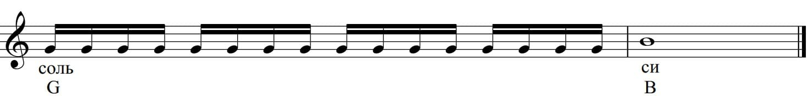Задание 11.Подобрать 2-3 песни на данные аккорды;
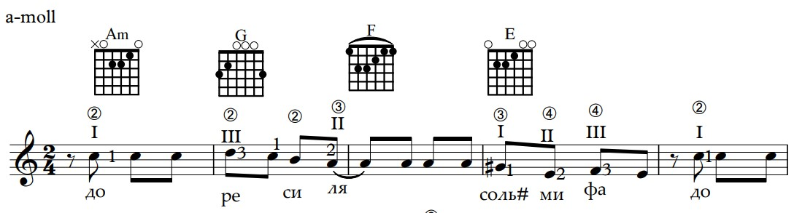 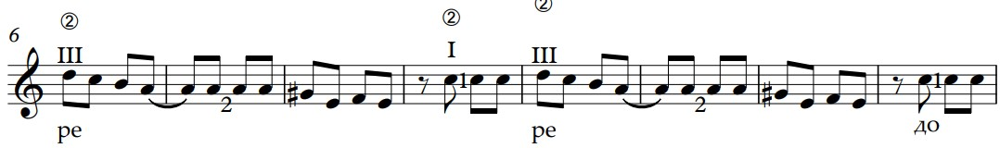 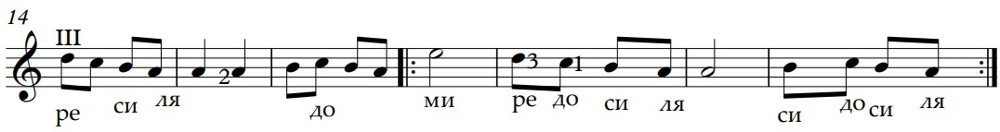